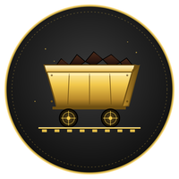

Estilo de aprendizagem ×
Conhecer o seu estilo de aprendizagem é descobrir como você prefere receber, processar e organizar o
que aprende — na bancada do laboratório e na hora de estudar em casa. O Índice de Estilos de Aprendizagem de
Felder e Soloman olha para quatro dimensões, cada uma com dois polos:
Ativo ou Reflexivo Pôr a mão no equipamento e medir junto com o grupo, ou pensar no que vai fazer antes de começar.Sensorial ou Intuitivo Partir do que dá para ver e medir na bancada, ou da ideia geral e da explicação por trás.Visual ou Verbal Lembrar melhor do gráfico, do desenho e da montagem, ou do texto escrito e da explicação falada.Sequencial ou Global Seguir o Roteiro de Bancada passo a passo, ou entender o experimento inteiro antes de começar.
Ninguém é um polo só: cada um pende para um lado, com mais ou menos força, e isso muda com a prática. Não existe
estilo melhor nem pior.
No grupo de bancada, vale duas vezes: saber o seu jeito ajuda a escolher como estudar, e lembrar que cada colega
tem o dele ajuda a dividir as tarefas — quem monta, quem mede, quem anota e quem faz o gráfico.
Com esse retrato, você escolhe estratégias (e usos da IA) que combinam com o seu jeito e treina, de propósito, o polo que usa menos. Em cada Etapa, responda de novo e acompanhe como o seu perfil muda.
Responder o questionário20 perguntas · cerca de 5 min
Ver o painel da turma
FELDER, R. M.; SOLOMAN, B. A. Index of Learning Styles Questionnaire . Raleigh: North Carolina State University.
Site
Método
Método de Estudo
A ordem não é burocracia: ela segue como o cérebro aprende — preparação (pergunta antes da resposta), construção ativa (recuperar em vez de reler) e consolidação (revisão no mesmo dia e revisões espaçadas, com o sono fazendo a parte dele).
Você dedica até 20 min ao Pré-Laboratório, 100 min à aula no Laboratório e até 40 min ao Pós-Laboratório. Em cada parada, o botão Começar abre a página da sessão, com três fases; no alto da tela, o cronômetro marca o tempo.
Pré-Lab · fazer em casa, antes da aula de bancada
Preparar o experimento antes de tocar no equipamento: chegar à bancada sabendo o que será medido, com qual instrumento e com quais cuidados.
Fase 1 · Aquecimento — até 5 min Comece separando o material: Texto Temático, caderno de Física, caneta, lápis, borracha, régua e calculadora científica. Toque no cronômetro, no alto da tela, e aperte “Começar o aquecimento”. Bom estudo! Fase 2 · Estudo focado — até 12 min O cronômetro passa sozinho para o estudo focado: até 12 minutos, na ordem numerada dos objetos de aprendizagem. Fase 3 · Atividade final — até 3 min Releia os cuidados do Checklist de Segurança e anote no caderno a dúvida que você vai levar para a bancada.
Começar · sessão do Pré-Laboratório
Os objetos de aprendizagem desta parada, nesta ordem:
Ponto de Partida (PP) — vale nota · antes do Lab · 10 minResponder antes de estudar cria erro produtivo: o cérebro marca a lacuna e passa a procurar a resposta durante todo o Pré-Lab. Testar antes de ensinar aumenta o que fica depois. Resumo em Áudio (MD) — ouvir · 3 a 5 minO áudio monta o esqueleto da prática antes da leitura. Com o mapa geral pronto, a memória de trabalho gasta menos esforço com a estrutura e sobra para o detalhe do procedimento. Texto Temático (TT) — ler · a prática explicadaLeitura profunda sobre um esquema já ativado: ouvir e depois ler codifica o mesmo conteúdo por duas vias e deixa dois caminhos de recuperação. Simulações (SM) — explorar · simulaçõesManipular a simulação antes da bancada: errar sem risco e ver o invisível. O experimento virtual prepara o gesto do experimento real. Testinho (TN) — vale nota · antes do Lab · 10 minFecha o Pré-Lab medindo segurança e procedimento, com correção na hora. Erro corrigido na véspera vira aprendizagem; erro descoberto na bancada, risco.
Materiais de apoio desta parada (sem número no caminho):
Cartões Didáticos (CD) — ler · revisão ativaRecuperação ativa: virar o cartão e tentar responder antes de conferir custa esforço — e é esse esforço que fixa. Poucos minutos por dia rendem mais do que uma sessão longa de releitura. Mapa Conceitual (MC) — ler · questões conceituaisO mapa liga cada conceito ao instrumento que o mede e mostra a estrutura inteira da prática de uma vez. Ver como as peças se conectam organiza o que a leitura acabou de construir. Inventário de Equipamento (IE) — o que vai na bancadaReconhecer cada instrumento pelo nome e pela função antes de manuseá-lo. Quem chega sabendo o que vai na bancada gasta os 100 minutos do Lab medindo, não descobrindo. Checklist de Segurança (CS) — obrigatório · antes da bancadaSegurança é pré-condição, não etapa: quem entra sabendo os cuidados e os EPIs da prática libera a atenção para o experimento — e protege a si e aos colegas de bancada.
Lab · na bancada, com o professor · 100 min
Construir o conhecimento com as mãos: montar, medir e registrar — com o professor sustentando o que você ainda não faz sozinho.
Fase 1 · Aquecimento — até 10 min Comece organizando a bancada: os EPIs da prática, o Roteiro de Bancada, caderno de Física, caneta, lápis, régua e calculadora científica. Toque no cronômetro, no alto da tela, e aperte “Começar o aquecimento”. Bom experimento! Fase 2 · Experimento focado — até 80 min O cronômetro passa sozinho para o experimento focado: até 80 minutos para montar, medir e registrar. Fase 3 · Atividade final — até 10 min Registre os dados no Roteiro de Bancada, faça a Provinha e devolva a bancada organizada.
Começar · sessão do Laboratório
Os objetos de aprendizagem desta parada, nesta ordem:
Roteiro de Bancada (RB) — execução · registrar os dadosRegistrar a medição com as próprias mãos, no momento em que ela acontece: o que a gente gera e anota fica mais do que o que a gente copia. Apresentação do Lab (AP) — roteiro dos 100 min · rever depoisAtenção conjunta e fio condutor da sessão: o professor projeta o roteiro e sustenta o que você ainda não faz sozinho — e os slides ficam disponíveis para rever depois. Infográficos de Bancada (IG) — painel e consultas · durante a práticaConsulta visual no momento da dúvida: a resposta chega enquanto o problema ainda está na mão — e é assim que ela gruda. Provinha (PR) — vale nota · fechamento do LabTeste curto logo após a prática: consolida enquanto o traço ainda está fresco e mostra, ali mesmo, o que precisa voltar.
Pós-Lab · a partir do mesmo dia da prática
Transformar dados em conclusão. A memória não se fixa na bancada, e sim depois — em boa parte durante o sono.
Fase 1 · Aquecimento — até 5 min Comece separando o material: Texto Temático, caderno de Física, caneta, lápis, borracha, régua e calculadora científica. Toque no cronômetro, no alto da tela, e aperte “Começar o aquecimento”. Bom estudo! Fase 2 · Estudo focado — até 30 min O cronômetro passa sozinho para o estudo focado: até 30 minutos para transformar os dados da bancada no Relatório Mínimo. Fase 3 · Atividade final — até 5 min Confira o Relatório Mínimo antes de enviar e anote o que vai para o Relatório Completo.
Começar · sessão do Pós-Laboratório
Os objetos de aprendizagem desta parada, nesta ordem:
Relatório Mínimo (RM) — vale nota · no mesmo dia do Lab · 1 páginaO que é revisto ANTES de dormir entra na fila de consolidação da noite. É o "aula dada, aula estudada hoje" de Piazzi, aplicado aos dados da bancada. Relatório Completo (RC) — vale nota · até 6 dias após o LabRepetição espaçada com elaboração: voltar aos dados quando a lembrança já começou a cair rende mais — e escrever a análise completa é gerar, não copiar.
Resolução Científica do Problema (RCP) — os 5 passos
Pensamento Quantitativo
Medida, tabela, gráfico ou cálculo com unidade.
O que a questão quer? Reescrever o que a questão quer que eu responda O que eu tenho? Separar dados: números, medidas e unidades Qual é o desenho? Escolher estratégia ou estimar o resultado Minha solução Equacionar, calcular e comparar com as alternativas Confiro e respondo Conferir se o número faz sentido, comparar e marcar uma ou mais alternativas
Pensamento Qualitativo
Questão conceitual ou de leitura, sem conta.
O que a questão quer? Reescrever o que a questão quer que eu interprete O que eu tenho? Separar evidências do texto, da imagem e da fonte Como eu separo as afirmações? Propor uma leitura com base nas evidências Julgo uma por uma Confrontar cada alternativa com as evidências Confiro e respondo Marcar e justificar em uma frase
A resolução condensada. É o caminho dos 5 passos em poucas linhas, do tamanho que cabe no tempo da Pré-Aula, Aula e Pós-Aula.
Errar faz parte: cada erro anotado vira o degrau da próxima trilha.
Não pule nenhum objeto de aprendizagem. Se pulou, volte.
Música
Música
Por que estudar ouvindo? Miguel Nicolelis responde em O Verdadeiro Criador de Tudo : ciência e arte saem do mesmo lugar — o cérebro humano. E Pierluigi Piazzi, em Aprendendo Inteligência , acrescenta a parte prática: música sem letra não disputa com a leitura as áreas da linguagem. A palavra cantada rouba a palavra lida; a música instrumental sustenta, e some.
Daí a regra do projeto — uma trilha, uma música : ler, escrever e medir ouvindo música instrumental. A peça de cada trilha aparece na barra do topo dos OAs e na aba Música do Texto Temático.
Ler Escrever Medir
O acervo — as sete playlists
1 · Baden Powell — nos Afro-sambas cabem a bossa, o candomblé e a harmonia de câmara. Somar mundos é o ofício de quem estuda Física: a bancada mede, o caderno deduz, a mina explica por que importa.
2 · Yamandu Costa — improvisa porque conhece a estrutura até o último traste. Improviso não é sorte: é o nome da liberdade de quem estudou.
3 · Orquestra Ouro Preto — no ano 2000, numa cidade de igrejas barrocas e de uma escola de minas, o professor Ronaldo R. B. Toffolo e o compositor e bandoneonista argentino Rufo Herrera decidiram que Ouro Preto merecia uma orquestra sua. Deu certo: hoje ela leva a música brasileira ao repertório de concerto — de Ritmos Brasileiros às óperas Auto da Compadecida e Hilda Furacão — e forma jovens músicos na Academia Jovem e no Núcleo de Apoio a Bandas.
É, literalmente, uma casa: dos filhos de Ronaldo, Rodrigo rege a orquestra, Rodolfo é o violino solo e as gêmeas Marina e Mara também estão nos violinos.
E é a casa desta escola. Ronaldo R. B. Toffolo foi aluno, professor e diretor-geral da Escola Técnica Federal de Ouro Preto — a instituição que hoje é o IFMG Campus Ouro Preto — e defende, hoje como então, a audição de música instrumental como hábito saudável. A orquestra da cidade nasceu, em boa parte, dentro de casa. Estudar Física com ela ao fundo é estudar ouvindo a própria escola.
4 · Filarmônica de Minas Gerais — noventa músicos, um único referencial de tempo, erro na casa dos milissegundos: ordem de grandeza, sincronia, medida.
5 · J. S. Bach — a fuga é a definição de sistema físico: muitas vozes, uma lei só.
6 · W. A. Mozart — nada sobra, nada falta. Elegância é saber o que pode ser retirado sem quebrar o todo — no pentagrama e na montagem experimental.
7 · L. van Beethoven — de quatro notas, uma sinfonia; de duas ou três letras, uma lei. Muda a escala; a lei, não. E a Nona, composta já na surdez, lembra: o modelo vem antes da medida.
Na FE1, as playlists 1 a 4 giram em ciclo pelas trilhas T01-T11; as quatro trilhas da Metrologia (T0A a T0D) ficam fora do ciclo, com Bach.
Ampliando o acervo — em preparação
Marco Antônio Araújo (Belo Horizonte, 1949 — 1986) — primeiro violoncelista contratado da Sinfônica de Minas e, no estúdio, compositor que fez o barroco mineiro, a modinha e a seresta caberem no rock progressivo. Quatro discos autorais entre 1981 e 1985; morreu aos 36 anos, na véspera de receber o prêmio de melhor músico instrumental do país.
Raphael Rabello (Petrópolis, 1962 — Rio de Janeiro, 1995) — primeiro registro profissional aos treze anos; discípulo de Dino 7 Cordas e parceiro de Radamés Gnattali, levou o violão de sete cordas do acompanhamento ao centro do palco. Morreu aos 32 anos.
Os dois deixaram obras relevantes e inacabadas — e é exatamente isso que elas ensinam: nenhum experimento termina; toda medida com incerteza é um convite à medida seguinte.
FE-T0A · Bach — Concerto Italiano (BWV 971)
Etapa 1
Etapa 1 · Metrologia
As trilhas desta Etapa, na ordem em que você vai fazê-las.
FE-T0B · O Sistema Internacional de Unidades de Medidaem preparação
FE-T0C · A Matemática das Medidasem preparação
FE-T0D · O Número π (pi)em preparação
Etapa 2
Etapa 2 · Forças, Torques, Resultante e Equilíbrio de Corpos em Repouso
As trilhas desta Etapa, na ordem em que você vai fazê-las.
FE-T01 · Forças: Peso, Elástica, Tração, Empuxo, Compressão (Normal, Atrito) e Aerodinâmica (Sustentação, Arrasto)em preparação
FE-T02 · Resultante das Forças no Equilíbrio Estático de Ponto Materialem preparação
FE-T03 · Máquinas Simples: Plano Inclinado e Poliasem preparação
FE-T04 · Centro de Massa, Torque, Resultante de Forças e Torques no Equilíbrio de Corpo Extensoem preparação
Etapa 3
Etapa 3 · Forças, Aceleração, Trabalho, Energia e Potência de Corpos em Movimento + Fluidos em Equilíbrio
As trilhas desta Etapa, na ordem em que você vai fazê-las.
FE-T06 · Forças e Aceleração em Corpos fazendo Curvas, o Movimento Circular Uniforme (MCU)em preparação
FE-T07 · Formas de Energia, Fontes de Energia, Conversões, Transformação da Energia, Potência e Rendimento na Mecânicaem preparação
FE-T08 · Pressão, Pressão Atmosférica, Pressão em Líquidos em Equilíbrio e Máquinas Hidráulicas: Prensas e Elevadores Hidráulicosem preparação
FE-T09 · Densidade de Corpos, Densidade de Líquidos, Peso e Empuxo atuando sobre o Objeto, Flutuação dos Objetos em Líquidos em Equilíbrioem preparação
FE-T10 · Projeto Integrador — Parte 1: Física Aplicada na Mineraçãoem preparação
FE-T11 · Projeto Integrador — Parte 2: Física Aplicada na Mineraçãoem preparação
Documentos
Créditos
Créditos
Reitor
Rafael Bastos Teixeira
Pró-Reitor de Ensino
Mário Luiz Viana Alvarenga
Diretor-Geral do Campus Ouro Preto
Reginato Fernandes dos Santos
Diretora de Ensino
Talita Valadares
Coordenador do Curso Técnico em Mineração Integrado ao Ensino Médio
Salatiel Assis Resende
Coordenador da Área de Física (CODAFIS)
Lázaro Souza Lima
Autor da Trilha
Julio Azevedo — Professor do Ensino Técnico e Tecnológico do IFMG, atuando na Área de Física do campus Ouro Preto desde 1985. Criador do Núcleo de Inovação e Desenvolvimento de Experimentos Científicos (NIDEC) em 2016. Ex-aluno do Curso de Engenharia de Minas e do Curso de Física, ambos da UFOP.
Colaborador
Felipe Beato — Professor, pesquisador, colaborador do Núcleo de Inovação e Desenvolvimento de Experimentos Científicos do IFMG campus Ouro Preto. Licenciado em Física, Mestre em Física dos Materiais.
Edição
1.ª edição — Ouro Preto, 2026
Agradecimentos · Física e Poesia
Física Experimental 1 aplicada à Mineração

Trilhas de Aprendizagem
Trilhas de Aprendizagem são percursos de estudo construídos para orientar, apoiar e avaliar a sua caminhada pelo mundo da Física.
Nas abas da lateral esquerda estão, nesta ordem: o site (endereço, QR code, projeto e ineditismo), o método de estudo, a música para estudar, as três etapas com as suas trilhas, os documentos do curso e da disciplina e os créditos. No alto, os ícones levam ao início, ao cronômetro das sessões, ao tamanho da letra, ao modo claro ou escuro, à instalação do site, ao seu estilo de aprendizagem e à avaliação das Etapas.
Escolha uma trilha e explore os objetos de aprendizagem na ordem numerada , sem pular nenhum — a ordem segue como o cérebro aprende. Se pulou, volte.
Sucesso no seu estudo.
Etapa 1 · Metrologia
FE-T0A · Primeiros Passos no Laboratório
Pré-Lab · fazer em casa, antes da aula de bancada
Lab · na bancada, com o professor · 100 min
Pós-Lab · a partir do mesmo dia da prática
FE-T0B · O Sistema Internacional de Unidades de Medida em preparação
FE-T0C · A Matemática das Medidas em preparação
FE-T0D · O Número π (pi) em preparação
Etapa 2 · Forças, Torques, Resultante e Equilíbrio de Corpos em Repouso
FE-T01 · Forças: Peso, Elástica, Tração, Empuxo, Compressão (Normal, Atrito) e Aerodinâmica (Sustentação, Arrasto) em preparação
FE-T02 · Resultante das Forças no Equilíbrio Estático de Ponto Material em preparação
FE-T03 · Máquinas Simples: Plano Inclinado e Polias em preparação
FE-T04 · Centro de Massa, Torque, Resultante de Forças e Torques no Equilíbrio de Corpo Extenso em preparação
Etapa 3 · Forças, Aceleração, Trabalho, Energia e Potência de Corpos em Movimento + Fluidos em Equilíbrio
FE-T05 · Forças e Aceleração: Esfera e Bolha em MRU num Tubo com Óleo Mineral, Carrinho Descendo uma Rampa e Esfera em Queda Livre
Pré-Lab · fazer em casa, antes da aula de bancada
Lab · na bancada, com o professor · 100 min
Pós-Lab · a partir do mesmo dia da prática
FE-T06 · Forças e Aceleração em Corpos fazendo Curvas, o Movimento Circular Uniforme (MCU) em preparação
FE-T07 · Formas de Energia, Fontes de Energia, Conversões, Transformação da Energia, Potência e Rendimento na Mecânica em preparação
FE-T08 · Pressão, Pressão Atmosférica, Pressão em Líquidos em Equilíbrio e Máquinas Hidráulicas: Prensas e Elevadores Hidráulicos em preparação
FE-T09 · Densidade de Corpos, Densidade de Líquidos, Peso e Empuxo atuando sobre o Objeto, Flutuação dos Objetos em Líquidos em Equilíbrio em preparação
FE-T10 · Projeto Integrador — Parte 1: Física Aplicada na Mineração em preparação
FE-T11 · Projeto Integrador — Parte 2: Física Aplicada na Mineração em preparação
Lista de Presença
Sugestões de aprimoramento